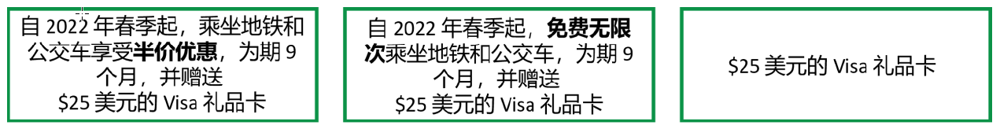

低收入者票价试验 (LIFT)
常见问题
8/10/2023
English አማርኛ Español Français 한국어 Tiếng Việt
章节
概述
调查
美元礼品卡
资格要求
报名参加
交通折扣
数据保护
联系我们
概述
何为低收入者票价试验 (LIFT)?
低收入者票价试验 (LIFT) 为试点项目，提供地铁和公交车折扣。通过抽奖，符合条件的居民将有机会获得半价折扣或免费无限次乘车，为期九个月。如果您符合条件并参加抽奖, 您将得到以下奖品之一：

LIFT 与 WMATA 的 Metro Lift 计划是否相同？？
○ 不相同。低收入者票价试验是一个试点计划，在 2023 年 1 月至 2023 年 10 月期间，为哥伦比亚特区居民提供交通折扣。哥伦比亚特区居民在 2022 年申请参加试点计划。WMATA 的 Metro Lift 计划是一项持续性计划，于 2023 年 6 月推出，专门为接收 SNAP 福利的家庭提供服务。
LIFT 与 的 Metro for DC 计划是否相同？？
○ 否。2022 年 12 月通过的《哥伦比亚特区华盛顿大都会区交通管理局 (Metro) 法案》(Metro For DC》包含从哥伦比亚特区发车的公交车免票等条款。免票公交车的实施尚需预算批准。
[回到顶部]
调查
我收到了关于 LIFT 调查的短信或电子邮件。这是什么？
○ 我们正在对 LIFT 参与者进行调查，了解其交通使用情况，以及其情感和经济状况。您的回答将有助于哥伦比亚特区政府了解公交和地铁费用对您的影响，并将有助于塑造哥伦比亚特区公共交通的未来。
我是否可以在电脑或手机上进行调查？
○ 可以。只要电脑或手机联网，您就可以在电脑或手机上进行调查。调查应能在所有浏览器上运行（例如 Google Chrome、Safari、Firefox 或 Microsoft Edge）。
如果我没有从 LIFT 获得公交和地铁折扣，我是否可以参加调查？
○ 可以。只要您是 LIFT 参与者，您就可以参加调查。如果您申请加入 LIFT 并在 2023 年收到通知，告知您将获得一张价值 $25 美元的 Visa 礼品卡、半价折扣或免费无限次乘车资格，您就可以参与调查。
我不是 LIFT 参与者。我还可以参加调查吗？
○不可以。此调查仅对 LIFT 参与者开放。
我是否可以多次参加调查？
如果您未完成调查但误关页面，您可以重新开始。我们要求每位参与者只在完成调查后按一次“提交”按钮。每位符合条件的参与者只有一次完整回答的机会，并有资格获得一张礼品卡。
在调查进行中，我可以在不同语言之间切换吗？
○可以，但调查会返回到第一页，所以您需要按“下一页”/前进箭头，返回刚才离开的页面。
完成调查后，我会得到什么？
○完成调查的适格 LIFT 参与者将收到一张价值 $30 美元的 Visa 电子礼品卡。另外，如果您在调查中提供您的有效非 LIFT SmarTrip 卡号，您还将有机会参加抽奖，赢取额外一张价值 $30 美元的 Visa 电子礼品卡。
为什么要求我提供一张非 LIFT SmarTrip 卡？
○我们将利用来自您 SmarTrip 卡的信息了解参与者使用地铁和公交的情况。我们已经拥有 LIFT 卡的 SmarTrip 卡号，我们希望确保我们对 LIFT 参与者的交通使用有一个全面的了解。分享参与者整体使用卡片的调查结果时，我们不会分享任何您的身份信息。
我在哪里可以找到我的 SmarTrip 卡号？
- 如果您有实体卡： 您的 SmarTrip 卡号位于卡片背面靠近底部。这一组数字应以 0167 开头。
- 如果您的 SmarTrip 卡在 Apple Wallet 中：打开您手机上的 Apple Wallet 应用程序。点击您的 SmarTrip 卡。 点击屏幕右上角的 “...” 。 点击 “Card Number”。 您的卡号应以 0176 开头。 您可以将该号码复制并粘贴到调查中。每组 4 个数字之间应会自动出现空格。
- 如果您的 SmarTrip 卡在 Google Wallet 中：打开您手机上的 Google Wallet 应用程序。点击您的SmarTrip 卡。您的卡号将显示于屏幕顶部，应以 0177 开头。
- 如果您使用 SmarTrip 应用程序： 打开 SmarTrip 应用程序。前往屏幕底部的 “Cards” 部分。点击您的 SmarTrip 卡。您的卡号将显示于屏幕顶部。
如需获取更多帮助或了解更多信息，请访问“查找您的 SmarTrip 卡号”。
为什么调查会问及我的家庭是否接收补充营养援助计划 (SNAP) 福利？
○ 全国各地的交通折扣计划和其他折扣计划有时仅提供给 SNAP 参与者。了解接收 SNAP 福利的家庭如何使用 LIFT 可以帮助我们为更好地服务于这些家庭提供建议。
$25 美元礼品卡
我对数字礼品卡不太熟悉。该如何使用？
○ 数字礼品卡是传统塑料礼品卡的电子版本。您可以通过拨打礼品卡背面列出的免收费电话号码或访问网站来查询您的余额。
我对数字礼品卡不太熟悉。该如何使用？
○ 数字礼品卡是传统塑料礼品卡的电子版本。您可以通过拨打礼品卡背面列出的免收费电话号码或访问网站来查询您的余额。Perfect Gift 提供更多关于如何查看数字礼品卡余额和如何使用数字礼品卡方面的信息。
我可以将数字礼品卡的金额添加至我的 LIFT SmarTrip 卡上吗？
○ 华盛顿大都会区交通管理局 (WMATA) 不建议使用礼品卡向在线 SmarTrip 卡充值，因为 WMATA 无法保证其有效性。
我必须在某个日期之前使用我的数字礼品卡吗？
○ 是的。数字礼品卡在一年后将失效。
如果我的 $25 美元 Visa 礼品卡丢失或被盗，该怎么办？
○ 礼品卡的使用方式类似于现金，也就是说，如果别人知道您的礼品卡号码，便可以使用，并且无法追回。我们建议您对礼品卡号码进行保密。如果您在使用礼品卡时遇到问题（例如礼品卡无法使用或价值低于预期），请直接联系 Perfect Gift。您可以向 lift@dc.gov 报告此类问题，以供我们记录，但只有我们的供应商能够解决礼品卡使用问题，LIFT 不会发放替代（新）礼品卡。
如果我的 $25 美元 Visa 礼品卡丢失或被盗，该怎么办？
○ 礼品卡的使用方式类似于现金，也就是说，如果别人知道您的礼品卡号码，便可以使用，并且无法追回。我们建议您对礼品卡号码进行保密。
资格要求
此计划为哪些人而设？
如果以下 所有 情况属实，您可能有资格：
哥伦比亚特区政府为何通过抽奖来提供折扣？
○ 符合条件的人员多于我们为试点提供的资金，抽奖能让每个人都有公平机会来获得折扣。我们还能利用此抽奖活动为一项调研提供信息。此调研称为随机评估, 将有助于我们了解 LIFT 是否真正影响居民的出行方式以及其就业、收入、家庭、健康和能源使用。（了解我们如何保护参与者的数据。） 这些研究可能有助于我们在哥伦比亚特区打造更可负担的公共交通，并鼓励使用公共交通。
我年满 65 周岁。我如何获得交通折扣
● 我患有残疾。我如何获得交通折扣？
我不确定我是否为哥伦比亚特区政府雇员。我是否有资格参加 LIFT？
- 如果您为哥伦比亚特区政府雇员，您则没有资格参加 LIFT。哥伦比亚特区政府雇员是指履行哥伦比亚特区政府职能并因履行这些服务而获得薪酬的个人，或指哥伦比亚特区政府理事会或委员会的成员，无论是否获得薪酬。
- 其中并不包括作为独立承包商为哥伦比亚特区政府提供服务的个人。
为什么我需要接受 DOEE 的公用事业援助才能报名参加此计划？
- 我们希望尽可能地简化报名手续。DOEE 已对接受公用事业援助的家庭进行了收入核实，所以您无需再次核实您的收入。通过这种方式，我们将减少您参加抽奖所需的文书工作。
- 由于 LIFT 为临时试点, 因而名额有限。LIFT 的研究结果可用于制定日后政策和计划，来为低收入居民，而不仅仅是 DOEE 的客户，打造更易负担的交通。
我的家庭中是否可以有一个以上的成员参加抽奖？
每个家庭只能有一名成员报名参加 LIFT。
我不符合资格要求，但我仍需帮助以支付交通费用。我该怎么办？
如果您没有资格享受 LIFT, 您可能有资格享受其他交通折扣,
[回到顶部]
报名参加
报名是否有截止日期？
2022 年 11 月 30 日星期三为报名参加以获得交通折扣机会的最后期限。因为此计划为临时试点，我们不确定日后是否会再次提供。
我收到一条消息，说我没有资格。我现在应该怎么做？
如果您没有资格享受 LIFT, 您可能有资格享受其他交通折扣，
报名表上有一处误填。我该如何更正？
- 如果您仍在填写在线报名表，您可以使用表格底部的返回按钮，回到您误填的问题上（请勿使用浏览器的返回按钮）。
- 如果您已提交您的表格，您可填写一份新的表格。您最后提交的报名表将为我们所使用的版本。
我是否可以保存我的表格，之后再来查看？
是的。请点击表格底部的“保存并稍后继续 (Save and continue later)”按钮，并填写您的电子邮件地址。您会收到一封电子邮件，内含链接至原处。如果您以其他方式退出表格（如使用浏览器的返回按钮或关闭在线选项卡），您则需重新填写。请注意，在您全部完成表格并按下提交键之前，您不会被列入抽奖名单。对不完整表格进行保存并不能为您在抽签中保留位置。
我点击了浏览器中的后退按钮，且我无法重回报名表。
很遗憾，您的信息可能已遗失。您可以 在此处重新填写您的报名表。
填写注册表时，我遇到了技术困难。
请发送电子邮件至 lift@dc.gov 或致电 (202) 304-1975,说明您的问题并尽可能多提供详情，包括屏幕截图或图片。
我如何得知我的报名表是否被接收？
- 如果您在线报名，并提供了电子邮件地址，且在报名表的最后一步按了提交，您则会收到一封确认电子邮件。请务必检查您的垃圾邮件或垃圾邮件文件夹，并将 lift@dc.gov 加入您的联系人列表。
- 在接下来的两个月内，您会收到一封电子邮件或信函，确认您符合资格，并让您知晓您是否能在抽签中获得交通折扣。
- 如果您未收到我们的回复，请给我们发送电子邮件：lift@dc.gov 或联系 DOEE: (202) 304-1975。
如果我提交了报名表，我是否一定会收到交通折扣？
- 我们估计，符合条件并参加抽奖的人员中约有三分之一将获得交通折扣。但是每一个报名并符合条件的人员均将获得一张 $25 美元的 Visa 礼品卡，作为对您报名的感谢。
- 无论您是否被抽中获得折扣，只要您有资格参加抽奖，我们则会邮寄给您 $25 美元的 Visa 礼品卡，并可能要求您完成选择性（付费）调研。
我需要更新我的信息，但我已经提交了我的报名表。
○ 一旦您提交报名表，您则不能对其进行编辑。但如果您的信息有变，您可填写一份新的表格。您最后提交的报名表将为我们所使用的版本。
我按了提交键。接下来的步骤是什么？
- 您会收到一封电子邮件、短信和/或信件，确认您有资格，并让您知晓您是否在抽签中获得交通折扣。
- 如果您被选中获得折扣，我们将在接下来的两个月内向您邮寄一张带有折扣的 SmarTrip 卡，您的折扣将持续九个月。
- 无论您是否被抽中获得折扣，只要您有资格参加抽奖，我们则会邮寄给您 $25 美元的 Visa 礼品卡，并可能要求您完成选择性（付费）调研。
如果我改变了对参与 LIFT 的想法怎么办？
有关参与，您可以随时改变您的想法。请联系 lift@dc.gov 或致电 (202) 304-1975 与联系 DOEE 联系。如果您决定不再参与，您的 LIFT SmarTrip 卡上的折扣将被停用。您已提供的任何数据都可能列入我们的分析中，但我们不会收集任何有关您参与的额外数据。
[回到顶部]
交通折扣
我在抽签中被抽中获得 $25 美元的 Visa 礼品卡，但没有获得交通折扣。这是什么意思？
- 这意味着您可以继续按正常方式支付 Metrobus、Metrorail、DC Circulator 和其他区域公交合作伙伴的费用。票价将保持不变。
- 因为您的报名参与，您仍会收到一张 $25 美元的 Visa 礼品卡。我们将利用有关您使用公共交通和其他服务的信息，来帮助制定日后计划，让公共交通更加实惠。我们可能会要求您完成可选（付费）调研。
我在抽签中获得了半价折扣。这是什么意思？
- 这意味着您使用这张 SmarTrip 卡乘坐 Metrobus 公交车、Metrorail 地铁、哥伦比亚特区环城公交车 (DC Circulator) 和其他区域公交车合作伙伴时，可享受正常票价半价，为期九个月。您需先充值才能使用 LIFT SmarTrip 卡。您可进行在线充值，也可在 Metro 地铁站、Metro 公交车或在 CVS 和 Giant 等特定零售店进行充值。
- 我们会向您发送一封电子邮件、短信和/或信件，内含确认号码和取卡说明。您必须在 之前，携确认号码前往华盛顿都会区交通管理局 (WMATA) 领取您的 LIFT SmarTrip 卡，地址为 655 Virginia Ave SW, Washington, DC 20024。办公时间为星期一上午 8 点至下午 4 点、星期二上午 8 点至下午 2:30、星期三至星期五上午 8 点至下午 4 点。我们目前无法邮寄您的 LIFT SmarTrip 卡。
- 折扣将自您第一次使用您的卡时开始，至 2023 年 10 月 31 日到期。
- ○ 因为您的报名参与，您还会收到一张 $25 美元的 Visa 礼品卡。
- 我们将利用有关您使用公共交通和其他服务的信息，来帮助制定日后计划，让公共交通更加实惠。我们可能会要求您完成可选（付费）调研。
我在抽奖中获得了免费无限次乘坐。这是什么意思？
- 这意味着您使用这张 SmarTrip 卡乘坐 Metrobus、Metrorail、DC Circulator 和其他 区域公交合作伙伴 时，可以免费乘坐，为期九个月。在地铁站或公交上，您可以马上使用这张 SmarTrip 卡——无需进行交通充值或添加其他通行证。即使在高峰期，免费票价也适用。
- ○ 我们会向您发送一封电子邮件、短信和/或信件，内含确认号码和取卡说明。您必须在 之前，携确认号码前往华盛顿都会区交通管理局 (WMATA) 领取您的 LIFT SmarTrip 卡，地址为 655 Virginia Ave SW, Washington, DC 20024。办公时间为星期一上午 8 点至下午 4 点、星期二上午 8 点至下午 2:30、星期三至星期五上午 8 点至下午 4 点。我们目前无法邮寄您的 LIFT SmarTrip 卡
- 免费票价将自您第一次使用您的卡时开始，至 2023 年 10 月 31 日到期。
- 因为您的报名参与，您还会收到一张 $25 美元的 Visa 礼品卡。
- 我们将利用有关您使用公共交通和其他服务的信息，来帮助制定日后计划，让公共交通更加实惠。我们可能会要求您完成可选（付费）调研。
谁决定我是否获得 LIFT 折扣？
- LIFT 交通折扣经抽签随机发放。
- 无任何程序可对您的抽签结果提出上诉。
我何时能收到我的 LIFT SmarTrip 卡？
- ○ 如果您符合资格并被抽签抽中，可获得折扣，我们则会向您发送一封电子邮件、短信和/或信件，内含确认号码和取卡说明。您必须在 之前，携确认号码前往华盛顿都会区交通管理局 (WMATA) 领取您的 LIFT SmarTrip 卡，地址为 655 Virginia Ave SW, Washington, DC 20024。办公时间为星期一上午 8 点至下午 4 点、星期二上午 8 点至下午 2:30、星期三至星期五上午 8 点至下午 4 点。我们目前无法邮寄您的 LIFT SmarTrip 卡。
- 您的折扣将于 2023 年 10 月 31 日到期。无论您是否被抽中，我们都会向您邮寄 $25 美元的 Visa 礼品卡。
我可以在哪些具体的公共汽车和地铁上使用这一交通折扣？
○ 您可以像平时一样使用 LIFT SmarTrip 卡乘坐哥伦比亚特区的所有公共交通，包括 Metrobus 和 Metrorail 以及 DC Circulator。您还可以在马里兰州和弗吉尼亚州的一些公交系统上使用该卡,
- 包括阿灵顿公交系统 (ART)
- 费尔法克斯市——大学节能公交系统 (CUE)
- 亚历山大市安全承载归家系统 (DASH),
- 费尔法克斯连接线 (Fairfax Connector)
- 乔治王子县的TheBus
- 蒙哥马利县的 RideOn 公交车
- 劳登县公交系统以及波多马克和拉帕汉诺克公交委员会 (PRTC) 的 OmniRide。
LIFT 是否提供 MetroAccess 折扣?
- 否。LIFT 不提供 MetroAccess 折扣。LIFT 就向接受 SmarTrip 卡的 Metro 地铁、Metro 公交车和区域公交车合作伙伴提供折扣。
我是否可以通过 SmarTrip 手机应用程序或在线为我的 LIFT SmarTrip 卡充值？
- ○ 是的。您可以通过 SmarTrip 应用程序或在线注册您的卡、购买通行证，并为您的卡充值
- 如果您在抽奖中获得了免费无限次乘坐，您则无需添加通行证或充值。您所有乘坐均为免费。如果您有意，您仍可 在线 注册您的卡片。
我是否可以将我的 LIFT SmarTrip 卡转移到我的手机上（经 Apple Wallet 或Google Pay)?
否，您的 LIFT SmarTrip 卡不能经 Apple Wallet 或 Google Pay 添加至您的手机中。这意味着，您不能用您的手机进入地铁或公交车，您必须使用您的卡。
我是否可以出售我的 LIFT SmarTrip 卡？
否，请不要出售您的 LIFT SmarTrip 卡。此卡旨在助您出行。
我是否可以分享我的 LIFT SmarTrip 卡？
我们鼓励您使用 LIFT SmarTrip 卡为您自己支付地铁和公交费用，但共用并不会有任何处罚。
我可以在多长时间内使用我的免费无限次乘坐或半价折扣？
您的折扣将于 2023 年 10 月 31 日到期。过期后，您的 LIFT SmarTrip 卡将不再有效。您可像平时一样，继续付费乘坐地铁和公交车。
我是否可以在 LIFT 期间参与哥伦比亚特区政府的其他计划？
- 您参与 LIFT 并不会影响您通常从 DOEE 或其他哥伦比亚特区机构处获得的福利和服务，但如果您本人享受为老年人、残疾人或学生提供的地铁或公交车折扣，您则没有资格参与 LIFT。其中包括为老年人和残疾人提供的免费或减价票计划、儿童免费乘车和为学生提供的成人学习者交通补贴。
● 如果我的 LIFT SmarTrip 卡丢失或被盗，该怎么办？
- 如果您的 LIFT SmarTrip 卡丢失或被盗，请通过 lift@dc.gov与 我们联系，或致电 (202) 304-1975 与能源和环境部 (DOEE) 联系。我们将停用丢失或被盗卡片，并为您邮寄一张新卡。
如果我的 $25 美元 Visa 礼品卡丢失或被盗，该怎么办？
很遗憾，如果您 $25 美元的 Visa 礼品卡丢失或被盗，我们无法对其进行更换。
[回到顶部]
数据保护
哥伦比亚特区政府将如何使用我的信息？
除向居民提供交通折扣外，该计划还将有助于我们——哥伦比亚特区政府——了解这些交通折扣如何影响居民的出行，以及其就业、收入、家庭、健康和能源使用情况。我们将使用您的信息来查看您的身份和资格。我们还可能就以下事项使用您的信息：
- 向您发送 SmarTrip 卡和/或礼品卡，
- 与您联系以获取更多信息，
- 回答您的问题，
- 向您发送可选、有偿调研，以及
- 评估该计划如何影响您和其他哥伦比亚特区居民
我的数据将如何得到保护？
- 我们——哥伦比亚特区政府——以及我们所有的合作伙伴，将把您的数据作为机密和受保护信息处理，这意味着我们将安全存储您的数据，并在加密计算机上访问您的数据。我们决不会通过电子邮件发送您的数据、将您的数据张贴于网上，或通过未加密渠道进行提供。
- 我们将仅就了解 LIFT 的运行情况而使用您的数据。我们不会与广告商或执法部门分享您的数据，除非法律要求这样做。
- 我们公布的任何研究结果均不会包含您或任何其他参与者的姓名或个人信息。
- 完成研究后，我们将不再访问或使用您的个人信息。我们所复述的任何数据均不会包含您或任何其他参与者的姓名或个人信息。在可能的情况下，我们会将您的数据进行全部处理。
如果我参加此计划，日后是否会有人员与我联系？
是。在此计划的九个月期间，我们可能会与您联系几次，以获得更多有关您的交通使用和您对这个计划的体验的信息。
我为何被要求提供我的社会安全或外国人编号？
- 我们将利用您的社会安全号码或外国人编号来检查您的身份，并核实您的 LIFT 资格。我们还利用这些信息来了解 LIFT 是否正改善参与者的收入、健康、就业和其他福祉结果
我为何被要求提供有关我种族和民族的信息？
- LIFT 收集您的种族信息，以助于哥伦比亚特区政府了解交通折扣对居民出行方式的影响是否存在种族差异，以及居民的就业、收入、家庭、健康和能源使用情况。
[回到顶部]
联系我们
如果您有关于 LIFT 的问题，且此常见问题中未回答，请与我们联系：lift@dc.gov 或致电 (202) 304-1975 与 DOEE 联系。
[回到顶部]